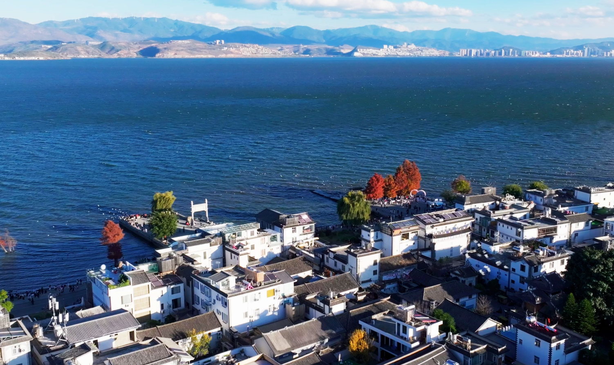
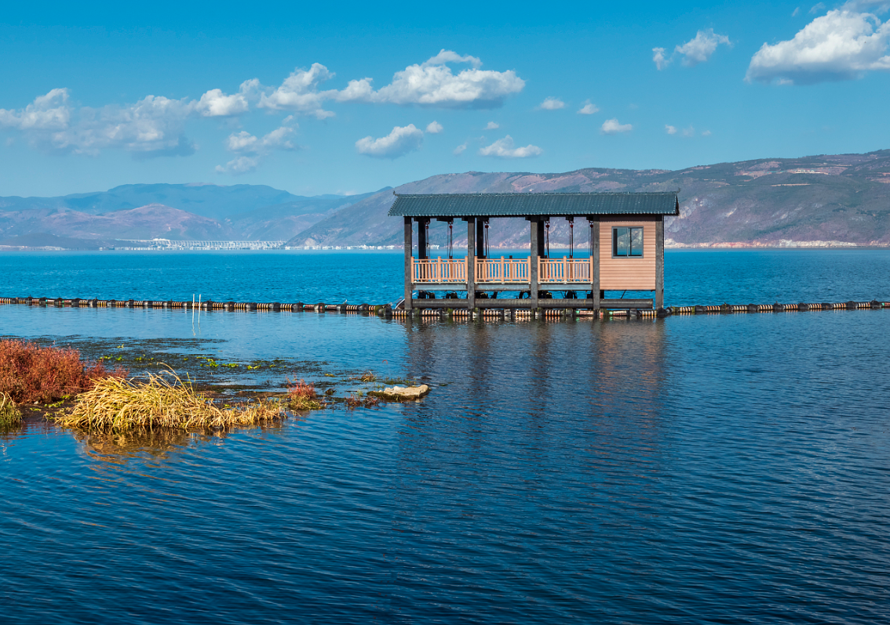
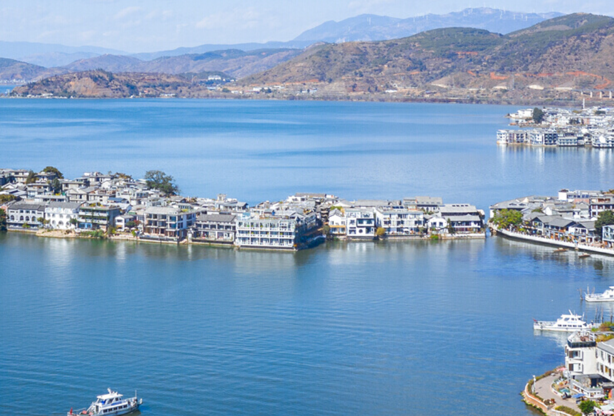

Discover Dali
Dali is a picturesque city located in the west of Yunnan Province, southwestern China. Nestled between the majestic Cangshan Mountain range and the serene Erhai Lake, Dali has long been celebrated as one of the most beautiful places in China. With its pleasant climate, rich cultural heritage, and stunning natural landscapes, Dali attracts travelers from around the world seeking both adventure and tranquility.
The city is home to the Bai ethnic minority, whose vibrant traditions, distinctive architecture, and colorful festivals add a unique cultural dimension to the region. From the ancient streets of Dali Old Town to the shimmering waters of Erhai Lake, every corner of Dali tells a story of natural beauty and human creativity that has endured for over a thousand years.
Erhai Lake
A vast alpine lake surrounded by mountains, known as the "Pearl of the Plateau." Its crystal-clear waters reflect the sky and Cangshan peaks.
Cangshan Mountain
Nineteen peaks form a dramatic backdrop to Dali. Snow-capped in winter, the mountain offers hiking trails with breathtaking views.
Three Pagodas
An iconic landmark of Dali built over 1,800 years ago. These elegant pagodas stand as a symbol of ancient Buddhist architecture.
Geography of Dali
Dali is situated on a fertile plain between Cangshan Mountain to the west and Erhai Lake to the east. The region sits at an elevation of approximately 1,976 meters above sea level, giving it a mild highland climate. The Erhai Lake basin covers an area of about 2,500 square kilometers, making it one of the largest fault lakes in southwestern China. The surrounding mountains are home to diverse ecosystems, from subtropical forests at lower elevations to alpine meadows near the snow-capped peaks that rise above 4,000 meters.
Climate and Seasons
Dali enjoys a subtropical highland climate characterized by mild temperatures year-round. The average annual temperature is around 15 degrees Celsius, with warm summers rarely exceeding 25 degrees and cool winters averaging around 8 degrees. The region experiences a distinct dry season from November to April and a rainy season from May to October. Spring is the most popular time to visit, when the mountains are blanketed with wildflowers and the weather is pleasantly warm with clear blue skies.
The People of Dali
Dali is home to a rich tapestry of ethnic groups, with the Bai people comprising the largest minority population. The Bai have lived in this region for over two millennia, developing a unique culture that blends elements from Han Chinese, Tibetan, and Southeast Asian traditions. The local way of life is deeply connected to the land, with fishing, farming, and artisan crafts forming the backbone of the community. Visitors are often struck by the warmth and hospitality of the local people, who take great pride in sharing their cultural heritage through music, dance, and traditional ceremonies.